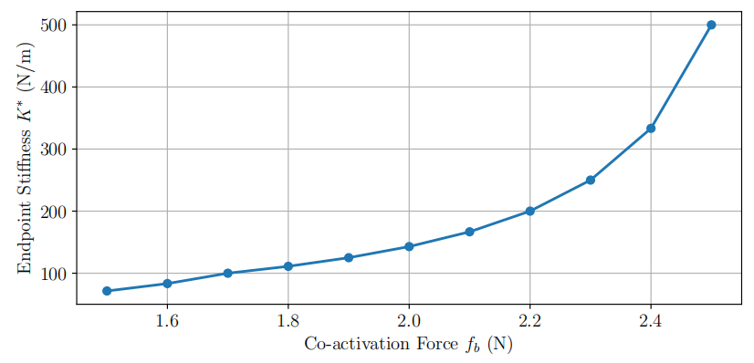

Stanford University · Summer research · 2025
Variable Stiffness Manipulator
A cable driven arm that changes its stiffness through its transmission geometry.

Design
I designed a variable stiffness module around a torsion spring and floating pulleys. Cable tension rotates the pulley assembly, changing the cable path and creating a nonlinear relationship between tension and displacement. We integrated three modules into a two joint arm using an N+1 actuation layout.


Control and testing
Joint position was controlled with PID feedback. A separate cable co-activation command adjusted internal tension and modulated the overall stiffness. The prototype demonstrated roughly a sevenfold increase in endpoint stiffness across the tested range, along with a shift in dominant natural frequency.



Yiwen Gao, Connor Yako, Shenli Yuan, and J. Kenneth Salisbury · Salisbury Robotics Lab